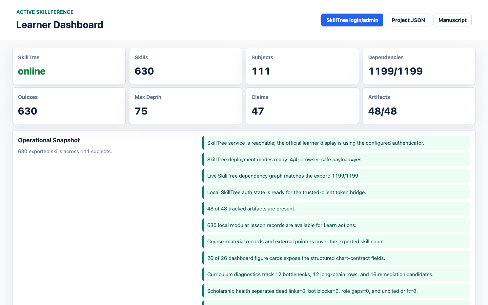
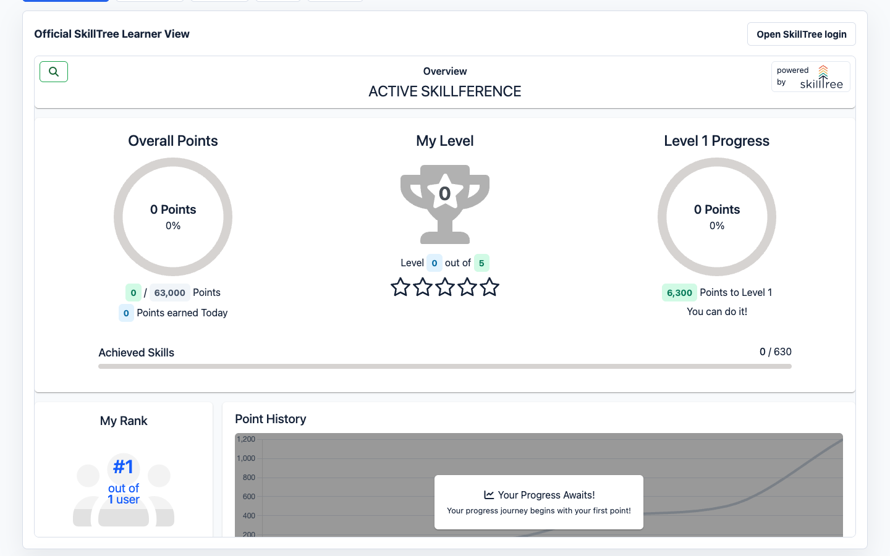
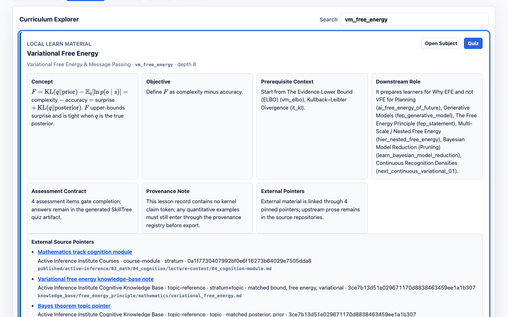
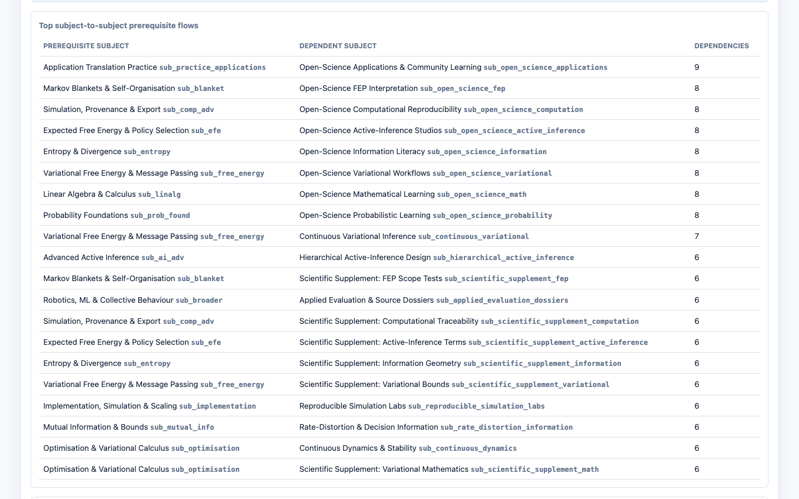
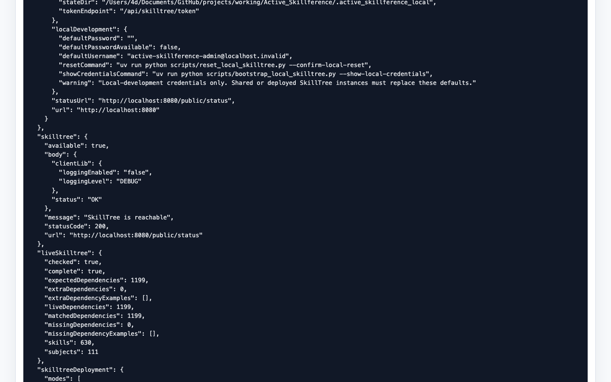

Results: SkillTree Export and Learner-Surface Handoff
SkillTree export, learner-surface handoff, and generated front matter
All registered claims are produced by tested kernels; every claim
token in the 630 skills resolves, and the bare-number linter reports
zero violations across descriptions, assessment prompts, and correct
numeric answer options. The scholarship audit similarly resolves every
authored citation against the bibliography and source-role matrix. The
provenance-rendered graph exports to a SkillTree project of 111
subjects, 630 skills, 1199 learning-path dependencies, 630 quizzes, and
2520 assessment questions, with no unresolved tokens in the output. The
source reaches the configured src/ coverage gate with no
mocks; exact current coverage is reported by the test run rather than
asserted in prose.
The dashboard delivery surface exposes the same contract. Its status payload cross-checks SkillTree export counts against build stats, tracks the claim ledger and figure artifacts, exposes the manuscript artifact audit, mounts the official learner display when SkillTree is online, and gives each skill a direct handoff into that display’s subject and quiz-gated skill pages. This avoids the common false demo in which a polished local UI merely copies course text: the local page can inspect and preview artifacts, but the learning and quiz actions are routed to the seeded SkillTree project.
Prose cannot settle that distinction, so the delivery surface is also recorded directly. [@fig:app_operational_snapshot] shows the landing view reporting exported counts, live SkillTree dependency parity, and artifact presence together. [@fig:app_official_learner_view] shows SkillTree’s own client library rendering the seeded project inside the local page, with its native points, level, progress rings, and ranking; that is the observation the export-lands-in-the-platform reading needs, and no exported JSON file can supply it. [@fig:app_curriculum_learn_material] shows the generated lesson record for one skill beside its commit-pinned upstream pointers, so the material boundary is visible rather than asserted. [@fig:app_dependency_graph] shows the captioned prerequisite-flow table that carries the heaviest subject-to-subject relations for readers who cannot use the lane drawing, which is a ranked summary of that structure rather than a complete substitute for every edge, and [@fig:app_runtime_deployment_matrix] shows deployment-mode readiness beside the browser-visible runtime payload, where the admin password and client secret are absent. These five images are recordings rather than renders: unlike every other figure here they cannot be rebuilt from project data, so they are version-controlled, marked in the figure registry as captured evidence, and stamped with the dashboard URL, viewport, live counts, capture timestamp, per-image digest, and full-stack mode of the run that produced them. Being recordings, they are also the one family exempt from the check that every registered figure was emitted by the render pipeline; the exemption is recorded in the registry rather than left implicit, and their integrity rests on the digest and provenance record instead.
The front matter follows the same rule. The cover image is generated
from the live graph, claim registry and roadmap metrics, and the
page-two named-skill atlas is generated from every authored skill name
in the curriculum graph. Both images are checked by publication-asset
audits before rendering. The cover uses a square layout so it can serve
both PDF title-page and web artifact contexts; the atlas uses a wide
page-two layout so the skill-name vocabulary remains readable by showing
a reduced weighted-term sample and representative dependency checkpoints
rather than a complete printed index. Neither asset is a numbered
scientific figure: the dashboard exposes them as cover-category
artifacts, while figure_registry.json remains reserved for
manuscript figures that are declared and cross-referenced in the text.
This prevents polished front matter from becoming a false-certification
path outside the artifact contract.




